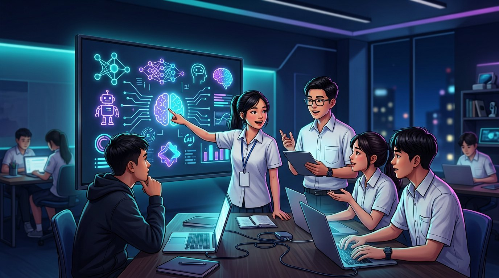

WORKSHOPAI cơ bản
WORKSHOPAI cơ bảnLàm quen với AI tạo sinh
Tìm hiểu cách các công cụ AI tạo văn bản và hình ảnh hoạt động, cách viết yêu cầu hiệu quả và sử dụng có trách nhiệm.
Xem hướng dẫn từng bước → THỰC HÀNHLàm theo nhóm
THỰC HÀNHLàm theo nhómThử thách chế tạo chatbot
Chọn một vấn đề quen thuộc trong học tập, lên kịch bản và dựng bản mẫu chatbot hỗ trợ bạn bè.
Xem hướng dẫn từng bước → CHIA SẺThảo luận
CHIA SẺThảo luậnAI và cuộc sống quanh ta
Trao đổi về lợi ích, hạn chế và những câu hỏi đạo đức nảy sinh khi AI ngày càng phổ biến.
Xem hướng dẫn từng bước →Máy tính học từ dữ liệu thế nào?
Minh họa các khái niệm dữ liệu, mô hình và dự đoán qua hoạt động tương tác đơn giản.
Xem hướng dẫn từng bước →AI vì trường học thân thiện
Cùng đề xuất ý tưởng ứng dụng công nghệ để cải thiện trải nghiệm học tập và đời sống học đường.
Xem hướng dẫn từng bước →
CLB MEETUPKết nốiGóc chia sẻ công cụ hay
Thành viên giới thiệu công cụ đã thử, mẹo hữu ích và điều mình rút ra sau mỗi lần khám phá.
Xem hướng dẫn từng bước →Lịch và thời gian tổ chức sẽ được ban chủ nhiệm thông báo qua các kênh chính thức của nhà trường/CLB.
Sẵn sàng thử điều mới?
Hãy để lại thông tin để nhận tin tuyển thành viên và lịch sinh hoạt.